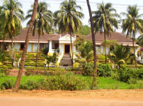
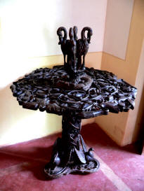

| |
This house is of historical importance because the
founder of Quepem town built it.
It was the wish of its founder, that the house be preserved.
In 1825, he even presented it to the Viceroys of
India-Portuguesa to spend their holidays, so that they could
preserve the house (and institutions) he had founded.
After his death, the Palácio was occupied by a Chaplain.
Around 1989, this house was given to some nuns to be run as
a home for destitute women.
The fury of the tropical climate made the maintenance of
such a large house a Herculean task and, they too abandoned
the house.
Finally, it was decided to privatize it and open it up for
public viewing.
|

 |